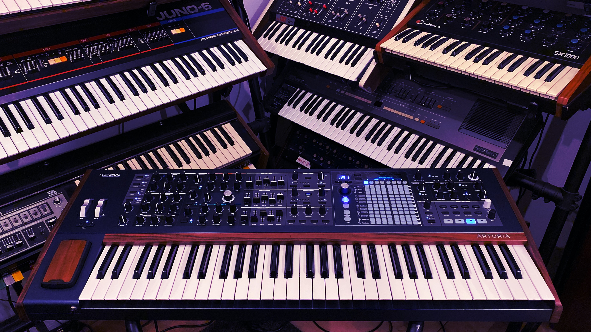

A synthesizer (also spelled synthesiser) is an electronic musical instrument that generates audio signals. Synthesizers typically create sounds by generating waveforms, through methods including subtractive synthesis, additive synthesis and frequency modulation synthesis. These sounds may be altered by components such as filters, which cut or boost frequencies; envelopes, which control articulation, or how notes begin and end; and low-frequency oscillators, which modulate parameters such as pitch, volume, or filter characteristics affecting timbre. Synthesizers are typically played with keyboards or controlled by sequencers, software or other instruments, and may be synchronized to other equipment via MIDI.
Synthesizer-like instruments emerged in the United States in the mid-20th century with instruments such as the RCA Mark II, which was controlled with punch cards and used hundreds of vacuum tubes. The Moog synthesizer, developed by Robert Moog and first sold in 1964, is credited for pioneering concepts such as voltage-controlled oscillators, envelopes, noise generators, filters, and sequencers. In 1970, the smaller, cheaper Minimoog standardized synthesizers as self-contained instruments with built-in keyboards, unlike the larger modular synthesizers before it.
Synthesizers were initially viewed as avant-garde, valued by the 1960s psychedelic and counter-cultural scenes but with little perceived commercial potential. Switched-On Bach (1968), a bestselling album of Bach compositions arranged for synthesizer by Wendy Carlos, took synthesizers to the mainstream. They were adopted by electronic acts and pop and rock groups in the 1960s and 1970s, and widely used in 1980s rock. Sampling, introduced with the Fairlight synthesizer in 1979, has influenced all genres of music and had a major influence on the development of electronic and hip hop music. Today, the synthesizer is used in nearly every genre of music, and is considered one of the most important instruments in the music industry. According to Fact in 2016, "The synthesizer is as important, and as ubiquitous, in modern music today as the human voice."